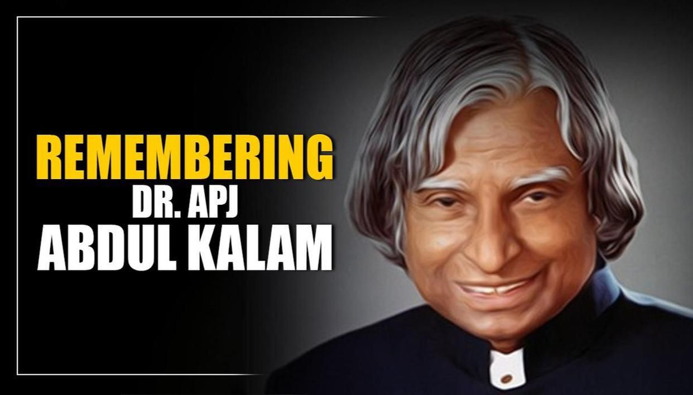

Dr. A. P. J. Abdul Kalam
MISSILEMAN OF INDIA

APJ Abdul Kalam is fondly remembered as the Missile Man of India because of his contribution to improving the defence of India in defence research and development organisation and ISRO.
Here's a time line of Dr. Kalam life
- Abdul Kalam was born as Avul Pakir Jainulabdeen Abdul Kalam.
- Kalam started working at a very young age since he came from a very poor background.
- It is even said, that, to support his family, Kalam used to distribute newspapers after school.
- He did not score good grades but was described as a bright and hardworking student.
- Abdul Kalam graduated with a degree in Physics in the year 1854.
- At Defense Research and Development Organisation (DRDO), Kalam designed a small helicopter for the Indian army.
- Kalam was transferred to ISRO in 1969 as the project director of India's first satellite launch vehicle (SLV-III) to deploy the Rohini satellite in the earth's orbit.
- In 2009, Kalam became the first Asian to be honoured with the Hoover Medal which is America's top engineering prize.He has also received honorrary doctorates from more than 30 universities.
- Kalam also got honoured by the Government of India with the Padma Bhushan in 1981 and the Padma Vibhushan in 1990.
- He has been honoured with the Bharat Ratna as well in 1997.
- He served as the 11th president of India from 2002-07.
- Kalam is popularly known as the 'Missile Man of India' for his work on missile and launch vehicle technology.
- His books include Wings of Fire (his autobiography) ,India 2020- A Vision for the New Millenium, Ignited Minds, My Journey,The Luminous Sparks, Children ask Klama etc.
- While delivering a lecture at the Indian Institute of Management Shillong, Kalam collapsed and died from an apparent cardiac arrest on 27 July 2015, aged 83.